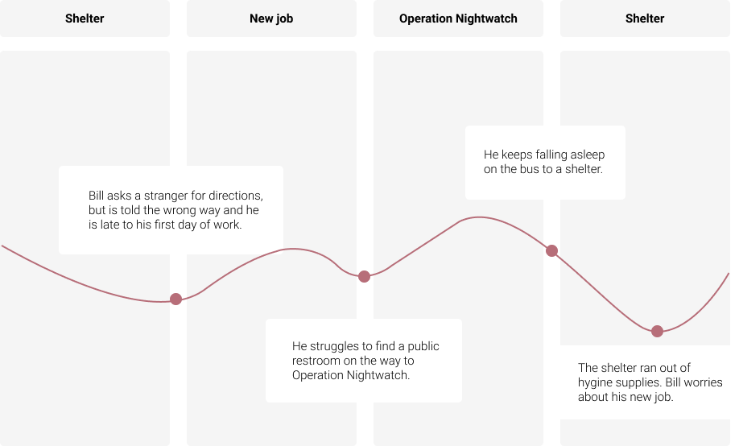
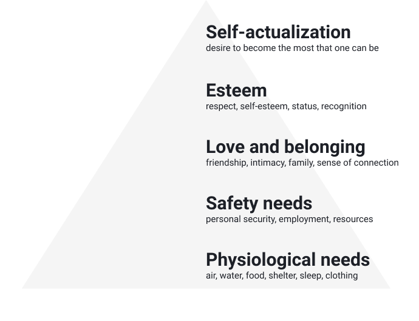

September - December 2019
UX Researcher
Throughout this project, “houseless” is used instead of “homeless”. The term is adopted and preferred by people living in a housing unstable world. Home is not restricted to a physical place but rather, can be used to describe community, a comfortable environment, or wherever safety and serenity lie. It is a fluid experience, and anyone can have a home.
My team and I partnered with Operation Nightwatch, a nonprofit organization that provides a free dinner, overnight shelter, and other services to those in need. They asked us to solve an information problem to improve houseless adult’s quality of life.
My team and I read articles on the crisis to identify information problems and the context around houselessness. We learned that it is caused by structural components, such as the criminal justice system not recognizing systemic racial inequality and policies, and individual.[1]
Longitudinal studies over the past 30 years suggests that the majority of the public was concerned about houselessness. However, attitudes varied by gender, income level, and political affiliation. Participants who identified as Democrat, a woman, and low-income were more likely to report compassion, positive community effects, and belief in structural over individual causes.[2]
01. “Homelessness Response: The Roots of the Crisis”, The City of Seattle, https://www.seattle.gov/homelessness/the-roots-of-the-crisis.
02. 2. Jack Tsai; Crystal Y.S Lee; Jianxuan Shen; Steven M. Southwick; Robert H. Pietrzak, “Public exposure and attitudes about homelessness”, Journal of Community Psychology 47, no. 1 (Jan 2019): 76-92.
We quickly realized that our project could not solve houselessness or one of its root causes in an instant because they were interconnected. A little stumped, we decided to narrow down after talking to our stakeholders. We had three stakeholders in consideration – homeless adults, Operation Nightwatch, and our mentor Professor Hendry.
All three of our stakeholders valued safety, but defined it differently.
Houseless people wanted to feel secure and stable. One interviewee mentioned, “I wish people can rate shelters. Things like whether they’re well kept, safe, clean, or experienced.”
Operation Nightwatch cared about its volunteers and wanted the houseless to make physically and mentally healthy choices. We noted that there may be value tensions if they discovered houseless visitors doing drugs.
Our mentor and team discussed minimizing exposure to danger. We acknowledged that because we exist in a community, feeling welcomed, seen, and heard would help create a safe space.
The houseless faced different problems depending on their familiarity with the area and experience with houselessness.

In the example above, Bill's experience reflects a lifestyle of someone new to houselessness and Seattle. But people familiar with Seattle and experienced houselessness for a longer time mentioned activities, such as meeting up with someone for coffee.

According to Maslow's hierarchy of needs, humans are motivated by a hierarchy of needs. The basic needs must be met before progressing up the pyramid. While the order of needs vary per person and context, the hierarchy explains why our user's needs shift around from love and belonging and safety needs.
Despite defining "safety" differently, our stakeholders had overlapping desires for a safe space. We thought of 4 information problems to potentially tackle -